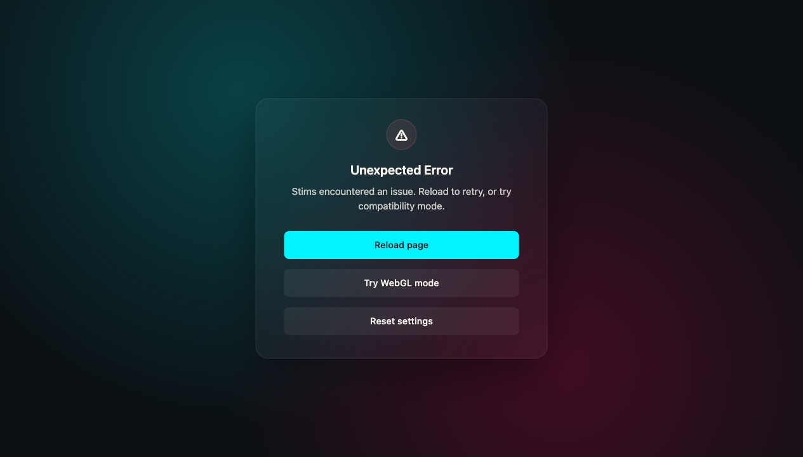
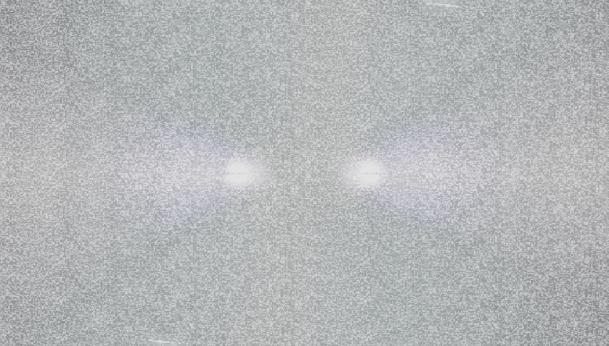
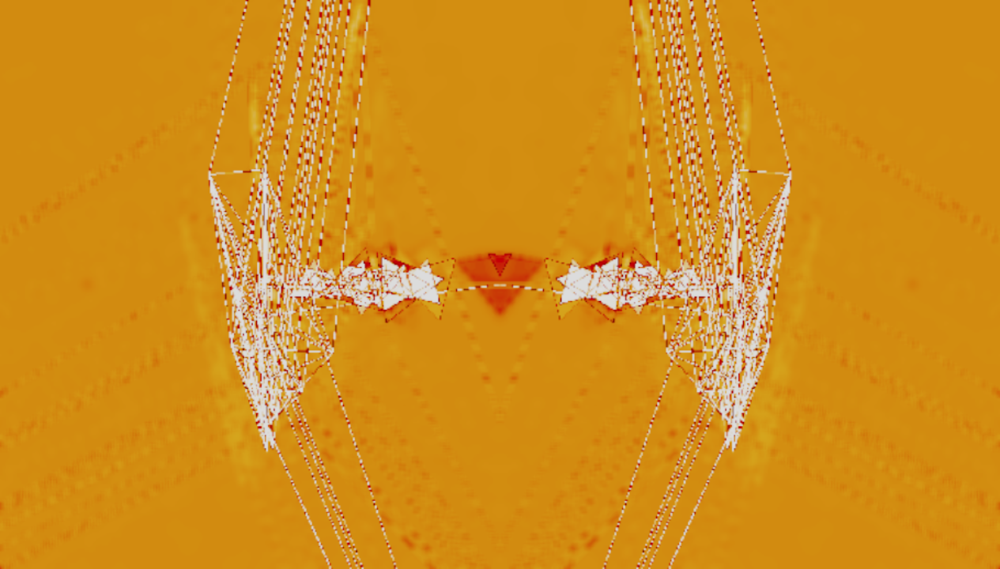
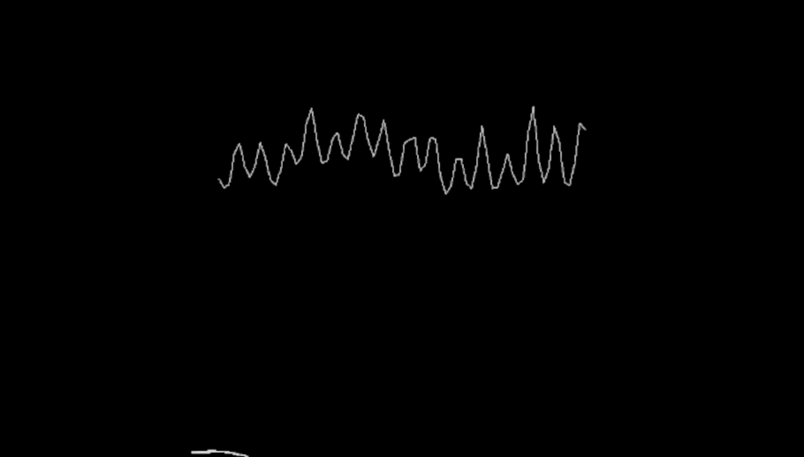

<!doctype html><html lang="en"><meta charset="utf-8"><meta name="viewport" content="width=device-width"><title>MilkDrop loop preset sweep</title><style>body{font:14px system-ui;background:#111;color:#eee;margin:24px}main{display:grid;grid-template-columns:repeat(auto-fill,minmax(280px,1fr));gap:16px}article{background:#1c1c1c;border:2px solid #333;border-radius:8px;overflow:hidden;padding-bottom:12px}article[data-status="runtime-regression"]{border-color:#ff5252}article[data-status="visual-regression"]{border-color:#ff9800}article[data-status="performance-regression"]{border-color:#ffeb3b}img,.missing{display:block;width:100%;aspect-ratio:16/9;object-fit:cover;background:#000}.missing{display:grid;place-items:center}h2,p{margin:8px 12px}h2{font-size:16px}code{overflow-wrap:anywhere}</style><h1>MilkDrop loop/while browser sweep</h1><p>Canonical route: <code>/?agent=true</code>. Results are ranked by impact.</p><main><article data-status="runtime-regression"><h2>amandio c - polar value [shader pimped]</h2><p><code>amandio-c-polar-value-shader-pimped</code></p><p>runtime-regression · 19.5 fps · 0.0000 frame delta</p><p>4 browser runtime error(s)</p></article>
<article data-status="runtime-regression"><div class="missing">No canvas capture</div><h2>martin - Flexis swarm in Martins pond [not yet a boid implementation] </h2><p><code>martin-flexis-swarm-in-martins-pond-not-yet-a-boid-implementation</code></p><p>runtime-regression · n/a fps · 0.0000 frame delta</p><p>screenshot: Element is not attached to the DOM
Call log:
  - taking element screenshot
  - waiting for fonts to load...
  - fonts loaded
  - attempting scroll into view action
    - waiting for element to be stable
; 3 browser runtime error(s)</p></article>
<article data-status="runtime-regression"><h2>Flexi - alien fish pond</h2><p><code>flexi-alien-fish-pond</code></p><p>runtime-regression · 14.2 fps · 0.0164 frame delta</p><p>2 browser runtime error(s)</p></article>
<article data-status="runtime-regression"><h2>!!!---flexi + amandio c - organic12-3d-2</h2><p><code>flexi-amandio-c-organic12-3d-2</code></p><p>runtime-regression · 12.8 fps · 0.0241 frame delta</p><p>2 browser runtime error(s)</p></article>
<article data-status="runtime-regression"><h2>flexi + amandio c - organic4-columns</h2><p><code>flexi-amandio-c-organic4-columns</code></p><p>runtime-regression · 15.8 fps · 0.0000 frame delta</p><p>2 browser runtime error(s)</p></article>
<article data-status="runtime-regression"><h2>Martin+Anandamide - Mandelbox_Explorer Quantum_Timepiece_remix</h2><p><code>martin-anandamide-mandelbox-explorer-quantum-timepiece-remix</code></p><p>runtime-regression · 18.2 fps · 0.0000 frame delta</p><p>2 browser runtime error(s)</p></article>
<article data-status="runtime-regression"><h2>martin - castle in the air</h2><p><code>martin-castle-in-the-air</code></p><p>runtime-regression · 15.0 fps · 0.0000 frame delta</p><p>2 browser runtime error(s)</p></article>
<article data-status="runtime-regression"><h2>martin - chain breaker</h2><p><code>martin-chain-breaker</code></p><p>runtime-regression · 17.0 fps · 0.0000 frame delta</p><p>2 browser runtime error(s)</p></article>
<article data-status="runtime-regression"><h2>martin - chain breaker xxx</h2><p><code>martin-chain-breaker-xxx</code></p><p>runtime-regression · 13.8 fps · 0.0000 frame delta</p><p>2 browser runtime error(s)</p></article>
<article data-status="runtime-regression"><h2>martin - cherry brain 2</h2><p><code>martin-cherry-brain-2</code></p><p>runtime-regression · 17.9 fps · 0.0000 frame delta</p><p>2 browser runtime error(s)</p></article>
<article data-status="runtime-regression"><h2>martin - city of shadows</h2><p><code>martin-city-of-shadows</code></p><p>runtime-regression · 14.8 fps · 0.0000 frame delta</p><p>2 browser runtime error(s)</p></article>
<article data-status="runtime-regression"><h2>martin - extreme heat</h2><p><code>martin-extreme-heat</code></p><p>runtime-regression · 14.2 fps · 0.0000 frame delta</p><p>2 browser runtime error(s)</p></article>
<article data-status="runtime-regression"><h2>Martin, Fishbrain + Flexi - lasercutting binary trees [random mashup]</h2><p><code>martin-fishbrain-flexi-lasercutting-binary-trees-random-mashup</code></p><p>runtime-regression · 15.8 fps · 0.0000 frame delta</p><p>2 browser runtime error(s)</p></article>
<article data-status="runtime-regression"><h2>martin, fishbrain + flexi - mandelbox explorer v1 Eo.S. optimize [bipolar witchcraft mix]</h2><p><code>martin-fishbrain-flexi-mandelbox-explorer-v1-eo-s-optimize-bipolar-witchcraft-mix</code></p><p>runtime-regression · 10.1 fps · 0.0000 frame delta</p><p>2 browser runtime error(s)</p></article>
<article data-status="runtime-regression"><h2>martin, flexi, fishbrain + sto - enterstate [random mashup]</h2><p><code>martin-flexi-fishbrain-sto-enterstate-random-mashup</code></p><p>runtime-regression · 19.1 fps · 0.0000 frame delta</p><p>2 browser runtime error(s)</p></article>
<article data-status="runtime-regression"><h2>martin, flexi, fishbrain + sto - enterstate [random mashup 3]</h2><p><code>martin-flexi-fishbrain-sto-enterstate-random-mashup-3</code></p><p>runtime-regression · 17.4 fps · 0.0000 frame delta</p><p>2 browser runtime error(s)</p></article>
<article data-status="runtime-regression"><h2>martin + flexi - mandelbox explorer - high speed oversustained bipolar</h2><p><code>martin-flexi-mandelbox-explorer-high-speed-oversustained-bipolar</code></p><p>runtime-regression · 14.5 fps · 0.0000 frame delta</p><p>2 browser runtime error(s)</p></article>
<article data-status="runtime-regression"><h2>martin + flexi - mandelbox stepper mix [kinetic triangles gossip matrix]</h2><p><code>martin-flexi-mandelbox-stepper-mix-kinetic-triangles-gossip-matrix</code></p><p>runtime-regression · 15.4 fps · 0.0000 frame delta</p><p>2 browser runtime error(s)</p></article>
<article data-status="runtime-regression"><h2>martin - frosty caves 2</h2><p><code>martin-frosty-caves-2</code></p><p>runtime-regression · 14.9 fps · 0.0000 frame delta</p><p>2 browser runtime error(s)</p></article>
<article data-status="runtime-regression"><h2>martin - mandelbox explorer - high speed demo version [Flexi's diffuse wave]</h2><p><code>martin-mandelbox-explorer-high-speed-demo-version-flexi-s-diffuse-wave</code></p><p>runtime-regression · 18.4 fps · 1.0000 frame delta</p><p>2 browser runtime error(s)</p></article>
<article data-status="runtime-regression"><h2>$$$ Royal - Mashup (253)</h2><p><code>royal-mashup-253</code></p><p>runtime-regression · 31.8 fps · 0.0000 frame delta</p><p>2 browser runtime error(s)</p></article>
<article data-status="runtime-regression"><h2>flexi + amandio c - organic12-3d4</h2><p><code>flexi-amandio-c-organic12-3d4</code></p><p>runtime-regression · 15.4 fps · 0.0000 frame delta</p><p>1 browser runtime error(s)</p></article>
<article data-status="runtime-regression"><h2>flexi + amandio c - organic12-3d4-2</h2><p><code>flexi-amandio-c-organic12-3d4-2</code></p><p>runtime-regression · 14.8 fps · 0.0000 frame delta</p><p>1 browser runtime error(s)</p></article>
<article data-status="runtime-regression"><h2>Fumbling_Foo &amp; Flexi, Martin, Orb - Star Forge v16</h2><p><code>fumbling-foo-flexi-martin-orb-star-forge-v16</code></p><p>runtime-regression · 2.3 fps · 0.0000 frame delta</p><p>1 browser runtime error(s)</p></article>
<article data-status="runtime-regression"><h2>Fumbling_Foo &amp; Flexi, Martin, Orb, Unchained - Star Nova v7b</h2><p><code>fumbling-foo-flexi-martin-orb-unchained-star-nova-v7b</code></p><p>runtime-regression · 2.2 fps · 0.0011 frame delta</p><p>1 browser runtime error(s)</p></article>
<article data-status="runtime-regression"><h2>geiss + martin - mandelbox explorer - high speed demo version (fire mix)</h2><p><code>geiss-martin-mandelbox-explorer-high-speed-demo-version-fire-mix</code></p><p>runtime-regression · 18.2 fps · 0.0000 frame delta</p><p>1 browser runtime error(s)</p></article>
<article data-status="runtime-regression"><h2>martin - amandio c - a different view of the green machine</h2><p><code>martin-amandio-c-a-different-view-of-the-green-machine</code></p><p>runtime-regression · 13.1 fps · 0.9999 frame delta</p><p>1 browser runtime error(s)</p></article>
<article data-status="runtime-regression"><h2>martin - carpet weaver</h2><p><code>martin-carpet-weaver</code></p><p>runtime-regression · 16.7 fps · 0.0838 frame delta</p><p>1 browser runtime error(s)</p></article>
<article data-status="runtime-regression"><h2>martin - cherry brain wall mod</h2><p><code>martin-cherry-brain-wall-mod</code></p><p>runtime-regression · 15.7 fps · 0.0000 frame delta</p><p>1 browser runtime error(s)</p></article>
<article data-status="runtime-regression"><h2>Martin, Fishbrain + Flexi - lasercutting binary trees</h2><p><code>martin-fishbrain-flexi-lasercutting-binary-trees</code></p><p>runtime-regression · 15.0 fps · 0.0000 frame delta</p><p>1 browser runtime error(s)</p></article>
<article data-status="runtime-regression"><h2>Martin, Fishbrain + Flexi - lasercutting binary trees [random mashup 3]</h2><p><code>martin-fishbrain-flexi-lasercutting-binary-trees-random-mashup-3</code></p><p>runtime-regression · 15.0 fps · 0.0000 frame delta</p><p>1 browser runtime error(s)</p></article>
<article data-status="runtime-regression"><h2>martin, flexi, fishbrain + sto - enterstate</h2><p><code>martin-flexi-fishbrain-sto-enterstate</code></p><p>runtime-regression · 18.9 fps · 0.0000 frame delta</p><p>1 browser runtime error(s)</p></article>
<article data-status="runtime-regression"><h2>martin, flexi, fishbrain + sto - enterstate [random mashup 2]</h2><p><code>martin-flexi-fishbrain-sto-enterstate-random-mashup-2</code></p><p>runtime-regression · 17.1 fps · 0.0000 frame delta</p><p>1 browser runtime error(s)</p></article>
<article data-status="runtime-regression"><h2>martin, flexi + sto - traumflug</h2><p><code>martin-flexi-sto-traumflug</code></p><p>runtime-regression · 16.3 fps · 0.0000 frame delta</p><p>1 browser runtime error(s)</p></article>
<article data-status="runtime-regression"><h2>martin - lock and release</h2><p><code>martin-lock-and-release</code></p><p>runtime-regression · 13.2 fps · 0.3608 frame delta</p><p>1 browser runtime error(s)</p></article>
<article data-status="runtime-regression"><h2>martin - lock and release ss</h2><p><code>martin-lock-and-release-ss</code></p><p>runtime-regression · 16.9 fps · 0.2112 frame delta</p><p>1 browser runtime error(s)</p></article>
<article data-status="runtime-regression"><h2>martin  - mandelbox explorer - high speed demo  [flexi's complex polynomial version]</h2><p><code>martin-mandelbox-explorer-high-speed-demo-flexi-s-complex-polynomial-version</code></p><p>runtime-regression · 21.4 fps · 0.0000 frame delta</p><p>1 browser runtime error(s)</p></article>
<article data-status="runtime-regression"><h2>martin - mandelbox explorer - high speed demo version</h2><p><code>martin-mandelbox-explorer-high-speed-demo-version</code></p><p>runtime-regression · 18.2 fps · 0.0000 frame delta</p><p>1 browser runtime error(s)</p></article>
<article data-status="runtime-regression"><h2>martin - test</h2><p><code>martin-test</code></p><p>runtime-regression · 18.5 fps · 0.0007 frame delta</p><p>1 browser runtime error(s)</p></article>
<article data-status="runtime-regression"><h2>martin - witchcraft reloaded</h2><p><code>martin-witchcraft-reloaded</code></p><p>runtime-regression · 10.8 fps · 0.0000 frame delta</p><p>1 browser runtime error(s)</p></article>
<article data-status="runtime-regression"><div class="missing">No canvas capture</div><h2>martin - mandelbox explorer - high speed demo version [Flexi's diffuse wave] [random mashup]</h2><p><code>martin-mandelbox-explorer-high-speed-demo-version-flexi-s-diffuse-wave-random-mashup</code></p><p>runtime-regression · n/a fps · 0.0000 frame delta</p><p>waitForFunction: Timeout 30000ms exceeded.</p></article>
<article data-status="runtime-regression"><div class="missing">No canvas capture</div><h2>martin - mandelbox stepper</h2><p><code>martin-mandelbox-stepper</code></p><p>runtime-regression · n/a fps · 0.0000 frame delta</p><p>waitForFunction: Timeout 30000ms exceeded.</p></article>
<article data-status="runtime-regression"><div class="missing">No canvas capture</div><h2>martin - mandelbulb slideshow</h2><p><code>martin-mandelbulb-slideshow</code></p><p>runtime-regression · n/a fps · 0.0000 frame delta</p><p>waitForFunction: Timeout 30000ms exceeded.</p></article>
<article data-status="runtime-regression"><div class="missing">No canvas capture</div><h2>Martin - QBikal - Surface Turbulence</h2><p><code>martin-qbikal-surface-turbulence</code></p><p>runtime-regression · n/a fps · 0.0000 frame delta</p><p>waitForFunction: Timeout 30000ms exceeded.</p></article>
<article data-status="runtime-regression"><div class="missing">No canvas capture</div><h2>Martin - QBikal - Surface Turbulence II</h2><p><code>martin-qbikal-surface-turbulence-ii</code></p><p>runtime-regression · n/a fps · 0.0000 frame delta</p><p>waitForFunction: Timeout 30000ms exceeded.</p></article>
<article data-status="runtime-regression"><div class="missing">No canvas capture</div><h2>Martin - QBikal - Surface Turbulence IIb</h2><p><code>martin-qbikal-surface-turbulence-iib</code></p><p>runtime-regression · n/a fps · 0.0000 frame delta</p><p>waitForFunction: Timeout 30000ms exceeded.</p></article>
<article data-status="runtime-regression"><div class="missing">No canvas capture</div><h2>martin - resonant twister</h2><p><code>martin-resonant-twister</code></p><p>runtime-regression · n/a fps · 0.0000 frame delta</p><p>waitForFunction: Timeout 30000ms exceeded.</p></article>
<article data-status="runtime-regression"><div class="missing">No canvas capture</div><h2>martin - resonant twister - steel spring</h2><p><code>martin-resonant-twister-steel-spring</code></p><p>runtime-regression · n/a fps · 0.0000 frame delta</p><p>waitForFunction: Timeout 30000ms exceeded.</p></article>
<article data-status="runtime-regression"><div class="missing">No canvas capture</div><h2>martin - sphery tales</h2><p><code>martin-sphery-tales</code></p><p>runtime-regression · n/a fps · 0.0000 frame delta</p><p>waitForFunction: Timeout 30000ms exceeded.</p></article>
<article data-status="runtime-regression"><div class="missing">No canvas capture</div><h2>martin - sphery tales slow version</h2><p><code>martin-sphery-tales-slow-version</code></p><p>runtime-regression · n/a fps · 0.0000 frame delta</p><p>waitForFunction: Timeout 30000ms exceeded.</p></article>
<article data-status="visual-regression"><h2>Flexi - impulse drive</h2><p><code>flexi-impulse-drive</code></p><p>visual-regression · 14.8 fps · 0.0011 frame delta</p><p>Both sampled canvas frames are effectively blank</p></article>
<article data-status="visual-regression"><h2>Martin, Fishbrain + Flexi - lasercutting binary trees [random mashup 2]</h2><p><code>martin-fishbrain-flexi-lasercutting-binary-trees-random-mashup-2</code></p><p>visual-regression · 16.6 fps · 0.0000 frame delta</p><p>Both sampled canvas frames are effectively blank</p></article>
<article data-status="performance-regression"><h2>flexi + amandio c - organic12-3d3</h2><p><code>flexi-amandio-c-organic12-3d3</code></p><p>performance-regression · 12.6 fps · 0.0217 frame delta</p><p>Frame rate 12.6 is below 30 fps</p></article>
<article data-status="performance-regression"><h2>Flexi - Fishies!</h2><p><code>flexi-fishies</code></p><p>performance-regression · 14.0 fps · 0.0145 frame delta</p><p>Frame rate 14.0 is below 30 fps</p></article>
<article data-status="performance-regression"><h2>flexi - target practice</h2><p><code>flexi-target-practice</code></p><p>performance-regression · 15.7 fps · 0.0233 frame delta</p><p>Frame rate 15.7 is below 30 fps</p></article></main></html>